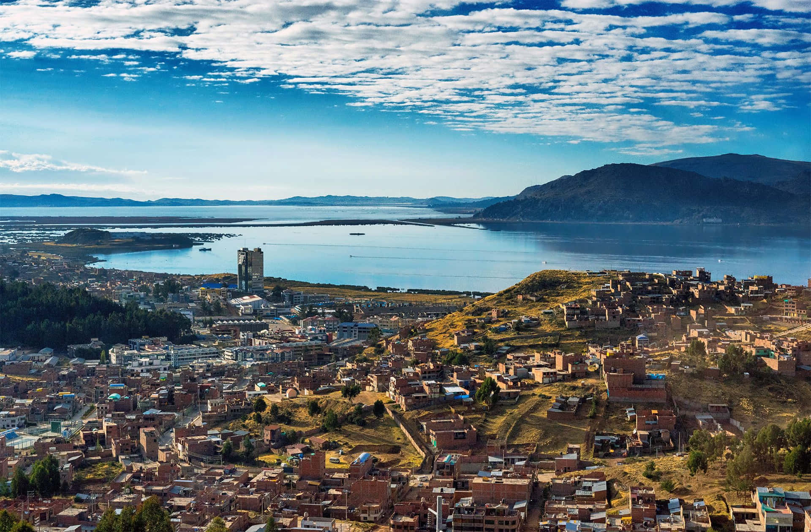
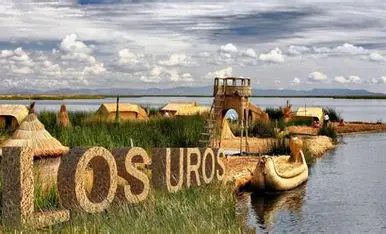
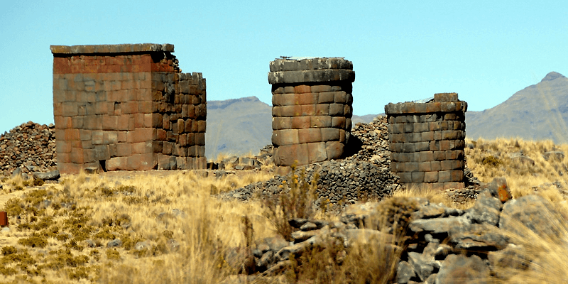

Ruinas de Sillustani
Un impresionante conjunto funerario preincaico situado sobre una colina con vistas al lago Umayo.
Ver en el mapa

Lago Titicaca
El lago navegable más alto del mundo, hogar de leyendas ancestrales y paisajes impresionantes.
Ver en el mapa

Islas Flotantes de los Uros
Comunidades indígenas que habitan islas artificiales hechas de totora en el lago Titicaca.
Ver en el mapa

Chullpas de Cutimbo
Tumbas preincaicas con torres funerarias que ofrecen vistas panorámicas de la región.
Ver en el mapa